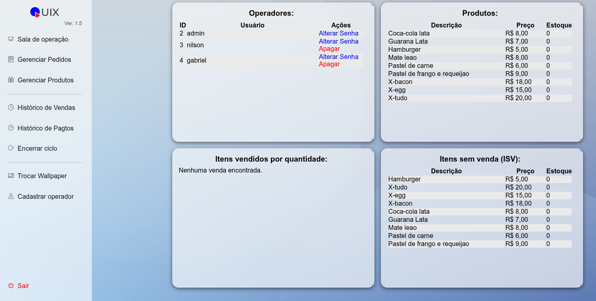
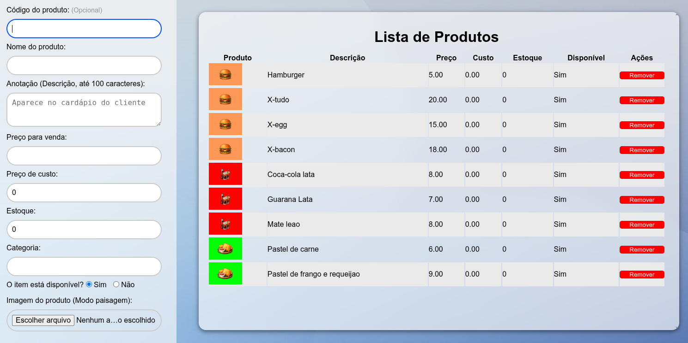
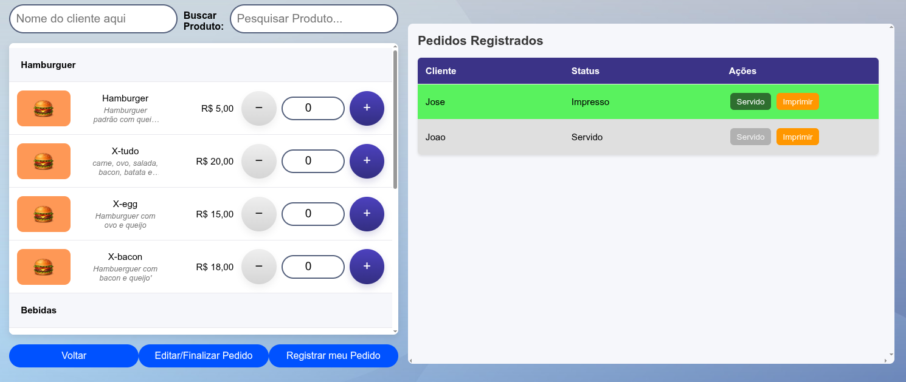
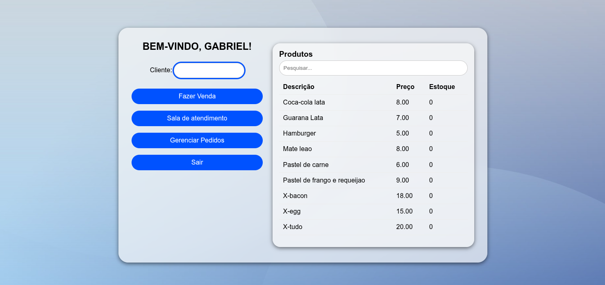

Gestor
O gestor tem acesso a todas as informações do sistema e pode alterar qualquer dado. Ele toma decisões importantes e alimenta o sistema com informações para operadores e clientes. Ele tem à disposição os relatórios de vendas, produtos, estoque, pedidos e entre outros medidores.


Balcão (Operador)
A pessoa do balcão opera o fluxo: tem total acesso aos pedidos, pode criar novos, editar pedidos feitos por clientes e finalizar vendas. Seu objetivo é organizar e fazer a ponte entre produção e clientes. Para isso há uma tela especial onde tudo isso pode ser feito sem enrolação.

